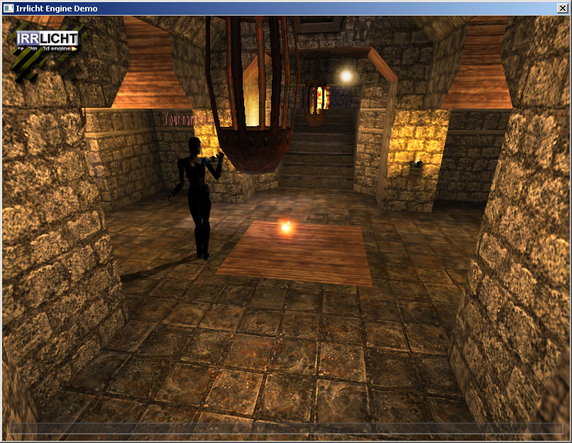

| Optional 3rd party dependencies |
What follows is a list of projects that will not build without 3rd party dependencies, and where to get these dependencies. These projects are optional: you can use RakNet without them. Unpack to is where the project, library, and/or post build step paths are set to by default for the Visual Studio project, and can be changed manually. IrrlichtDemo Peer to peer first person shooter demo showing off PHPDirectoryServer, ReplicaManager3, and NAT punchthrough. Download from: http://irrlicht.sourceforge.net/downloads.html Unpack to: C:\irrlicht-1.7.2\include
Ogre3DInterpDemoClient/Server ReplicaManager3 and interpolation demoDownload from: http://www.ogre3d.org/download Unpack to: Doesn't matter, Uses enviroment variable $(OGRE_HOME) Last checked against: Prebuilt binary 1.7.4. OGRE_HOME set to C:\OgreSDK_vc9_v1-7-4.
AutopatcherMySQLRepositoryOne of two supported database backends for the AutopatcherServer project, which is required to use AutopatcherClient. You only need one of the two.Download from: http://dev.mysql.com/downloads/ Unpack to: C:\Program Files (x86)\MySQL\MySQL Server 5.1 Note: MySQL is an order of magnitude slower than PostgreSQL with AutopatcherServer.
AutopatcherPostgreSQLRepositoryOne of two supported database backends for the AutopatcherServer project, which is required to use AutopatcherClient. You only need one of the two. During installation be sure to check developer tools, or the header files will not be installed.Download from: http://www.postgresql.org/download/ Unpack to: C:\Program Files (x86)\PostgreSQL\9.1
SQLite\Logger\D3D9Samples\Matrices This is a demo that assumes the DirectX SDK is installed. Get it from http://www.microsoft.com . You will also need to setup the Visual Studio global library and include paths.
Lobby2Server_PGSQLDatabase backend for the Lobby2 system, supporting users, clans, friends, and other persistent information.Download from: http://www.postgresql.org/download/ Unpack to: C:\Program Files (x86)\PostgreSQL\8.3
RoomsAndLobbyGFx3 Visual front-end for the RoomsPlugin and Lobby2 systems, with the ability to login and display a list of rooms. Note: Scaleform requires registration and is not-free. Download from: http://www.scaleform.com/ Unpack to: Doesn't matter, uses enviroment variable $(GFXSDK)
AutopatcherClientGFx3Visual front-end for the AutopatcherClient system. Note: Scaleform requires registration and is non-free.Download from: http://www.scaleform.com/ Unpack to: Doesn't matter, uses enviroment variable $(GFXSDK)
RakVoiceDSoundOne of three sound implementations of RakVoice, supporting DirectSound, FMOD, and PortAudio. PortAudio is already included in the RakVoice project. Unless you intend to use DirectSound, you do not need this project.Download from: http://msdn.microsoft.com/en-us/directx/aa937788.aspx Unpack to: Doesn't matter, uses enviroment variable $(DXSDK_DIR)
RakVoiceFMODOne of three sound implementations of RakVoice, supporting DirectSound, FMOD, and PortAudio. PortAudio is already included in the RakVoice project. Unless you intend to use FMOD, you do not need this project. Note: FMOD is not necessarily free.Download from: http://www.fmod.org/index.php/download Unpack to: C:\Program Files\FMOD SoundSystem Last checked against: Fmod 4.38.07
RPC3Remote procedure calls using C++ and semi-automatic serialization. Includes support for networked signals and slots. Note: The majority of boost is not required, only those files actually used by RPC3. If you don't want to use Boost, you can use the RPC4 plugin instead which has similar functionality to the RPC found in RakNet version 3.Download from: http://www.boost.org/users/download/ Unpack to: c:/boost_1_48_0 Note: You can use RPC4 if you do not want to install Boost, it however cannot call directly into C++ member functions or automatically serialize method parameters.
|
| See Also |
| Index FAQ |